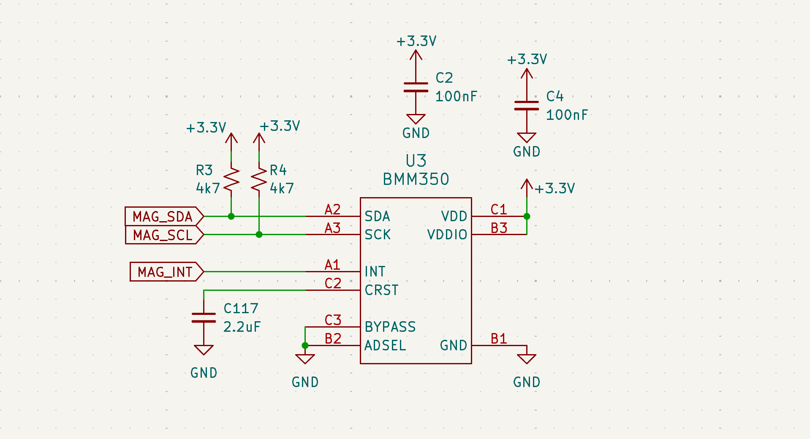
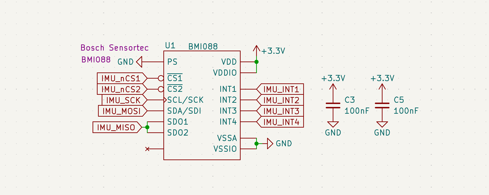
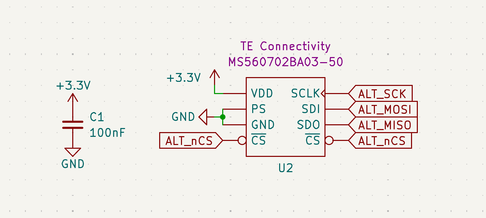
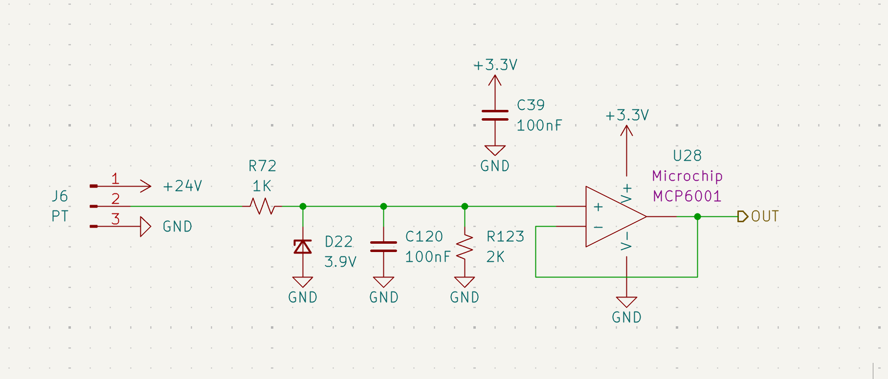
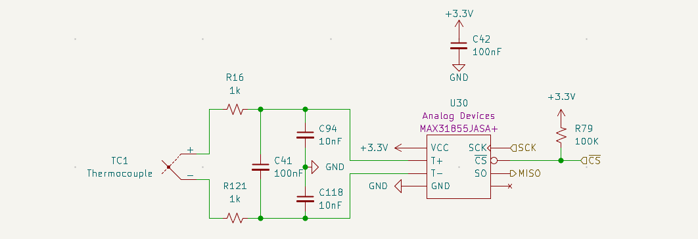

Sensors
Flight Sensors
The ECU utilizes a multi-sensor architecture for real-time orientation and altitude tracking.
| Sensor | Model | Bus | Range |
|---|---|---|---|
| IMU | BMI088 | SPI | ±24g / ±2000°/s |
| Magnetometer | BMM350 | I2C | ±2000μT |
| Altimeter | MS5607 | SPI | 10–1200 mbar |
Magnetometer (BMM350)
The BMM350 replaces the deprecated BMM150. It provides improved resolution (0.1μT) and a higher max sampling rate (400Hz).

Figure 23: BMM350 I2C interface with 4.7kΩ pull-up resistors (R3, R4).IMU (BMI088)
Utilizes SPI for deterministic data acquisition. Provides ±24g acceleration range and ±2000°/s rate sensing.

Figure 24: BMI088 SPI interface with independent Accel and Gyro Chip Selects.Altimeter (MS5607)
The Altimeter is connected via SPI, schematic attached below.

Figure 25: MS5607 SPI interface with localized decoupling capacitors.Propulsion Sensors
Propulsion sensors are subject to high EMI and vibration. Therefore, signal conditioning and filtering are critical for data integrity.
Pressure Transducers (PT)
The PT circuit translates 0–5V analog signals from the transducer down to a 0–3.3V range suitable for the STM32 ADC.

Figure 26: PT conditioning stage featuring voltage clamping and active buffering.- Sensor Model: Transducers Direct TDH40
- Voltage Divider & Clamping: A 1kΩ (R72) and 2kΩ (R123) divider scales the signal. A 3.9V Zener (D22) provides overvoltage protection.
- Active Buffer: An MCP6001 op-amp (U28) provides a low-impedance input to the ADC to prevent sampling errors.
- Noise Filtering: An integrated RC lpf (R72, C120) provides a cutoff frequency of 1591 Hz to reject high-frequency valve and engine noise.
Thermocouples (TC)
Uses the MAX31855JASA+ cold-junction compensated converter.

Figure 27: TC front-end with optimized differential and common-mode filtering.Filter Design & Justification
The TC front-end uses an optimized RC filter network to reject common-mode noise while maintaining a high signal-to-noise ratio (SNR). The design adheres to the Cdiff > 10 × Ccm rule to minimize the impact of component tolerances on noise rejection.
| Parameter | Value | Formula / Calculation |
|---|---|---|
| Series Resistance (R) | 1 kΩ | R16, R121 |
| Diff. Capacitance (Cdiff) | 100 nF | C41 |
| Common Mode Cap (Ccm) | 10 nF | C94, C118 |
| Diff. Mode Cutoff (fc,dm) | ~758 Hz | 1 / (2π × 2R × (Cdiff + Ccm/2)) |
| Common Mode Cutoff (fc,cm) | ~15.9 kHz | 1 / (2π × R × Ccm) |
- Common Mode Rejection: 10nF common-mode capacitors (C94, C118) reject noise that applies equally to both TC high and low voltages.
- Sampling Sync: The ~758Hz differential cutoff is specifically tuned to reject high-frequency engine noise while maintaining the 14Hz sampling resolution of the MAX31855.
Integration & Cabling Note
As documented in the Hardware Interface, the physical sensor connection has been upgraded from direct-to-GX soldering to a standardized Universal Adapter Board system.
- Sensor End: PT/TC connects to a slot on the Universal Adapter Board.
- Cable: Standard VGA cables with HD15 (D-Sub) connectors are used for the main cable run.
- ECU End: Cable connects to the ECU Adapter Board stacked on the main ECU, completing the electrical path to the conditioned ADC pins.